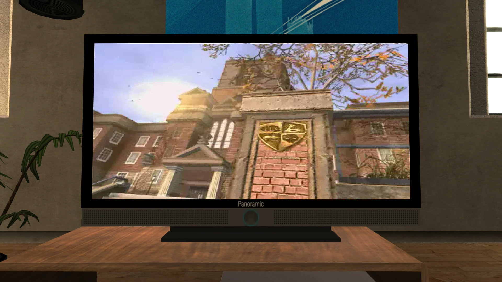
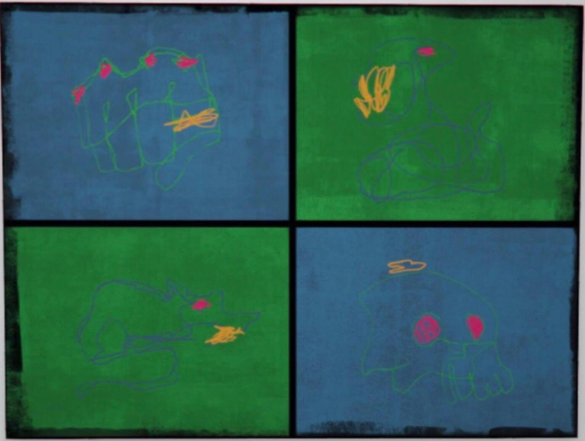
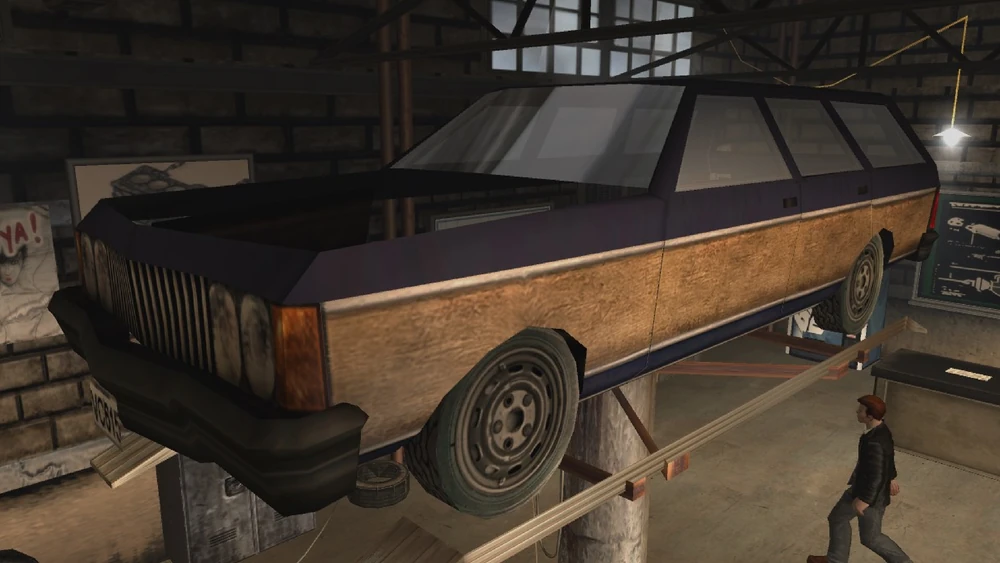
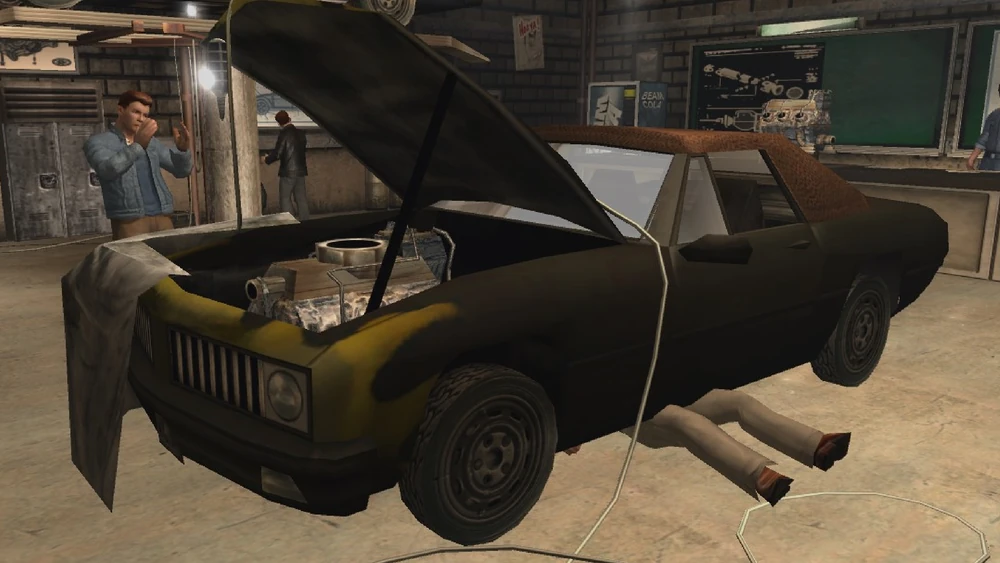
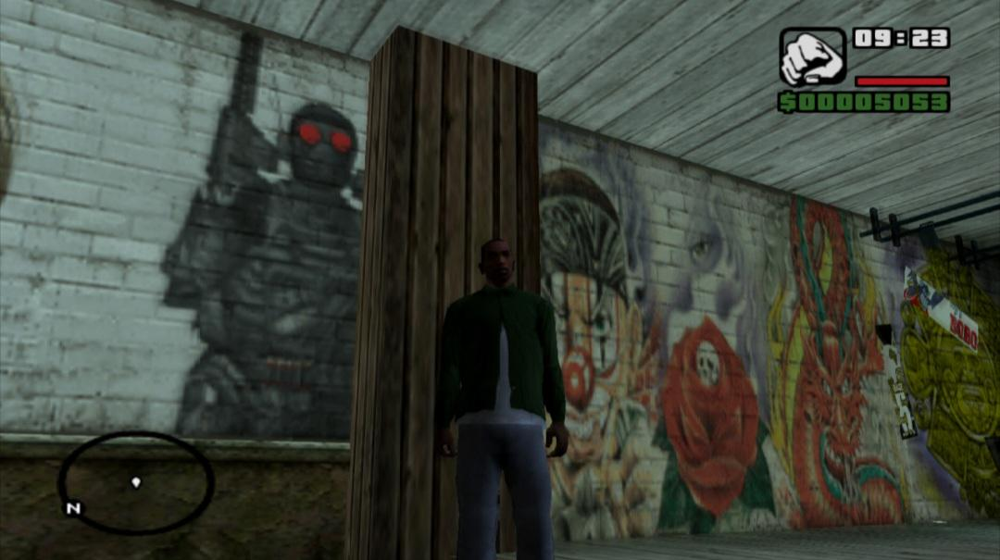
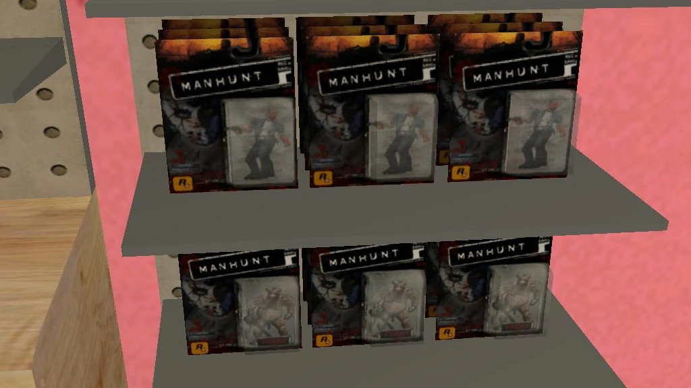
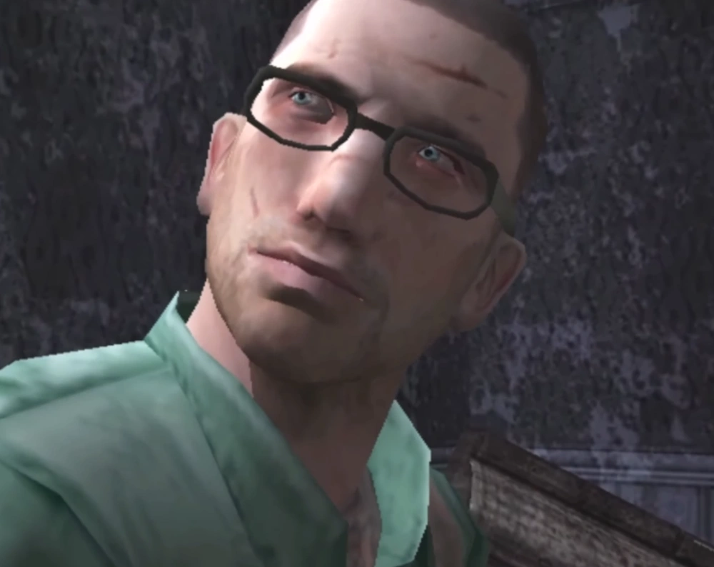

GTA: Vice City

Phil Cassidy
Na missão The Shootist (O Atirador), Phil Cassidy é contratado por Tommy Vercetti para ajudá-lo em um assalto a banco e recomenda Hilary King como motorista de fuga. Após o sucesso do roubo, Phil convida Tommy para trabalhar com ele no ramo de armas.
Mais tarde, enquanto testava uma bomba de Boomshine embriagado, Phil acidentalmente a detona e perde o braço esquerdo. Tommy o leva a um cirurgião militar aposentado, e os dois passam a administrar um negócio de armamentos, fornecendo armas pesadas exclusivas ao jogador.

Donald Love
Na missão The Party (A Festa), o jovem empresário Donald Love pode ser visto conversando com Avery e outro personagem a respeito dos seus negócios.
Não há nenhuma fala do personagem durante a gameplay.GTA: San Andreas

Catalina
Na missão First Date (Primeiro Encontro), CJ vai até o The Welcome Pump na cidade de Dillimore ao encontro de sua prima Catalina - que curiosamente está brigando com dois homens usando uma faca. Os dois acabam se envolvendo romanticamente, embora Carl inicialmente demonstre relutância. Eles passam a atacar diversos alvos considerados fáceis por ela, incluindo um posto de gasolina Gasso em Dillimore, um banco em Palomino Creek, uma casa de apostas Inside Track em Montgomery e uma pequena loja de bebidas em Blueberry.
Com o tempo, o relacionamento entre os dois se deteriora. Carl está focado em conseguir dinheiro para tentar libertar seu irmão Sweet, que foi preso pela CRASH, enquanto Catalina demonstra pouco interesse nesse objetivo. Após o fim da relação, ela inicia um romance com Claude e o acompanha em duas corridas contra Carl e Wu Zi Mu.

Claude (Speed?)
Na missão Farewell My Love (Até Mais, Meu Amor), no início da cutscene vemos o primeiro (e até agora o único) crossover de protagonistas de toda a série GTA. Claude, como de costume, não fala absolutamente nada, mas fica frente a frente de CJ. Catalina o usa para causar ciúmes do ex-namorado, mas fala miseravelmente.
Oficialmente a Rockstar Games nunca afirmou que o sobrenome do personagem é Speed. Isto é apenas uma confusão com a sua versão da era 2D.
Ken Rosenberg
Após a sua vitória ao lado de Tommy no jogo anterior, o renomado advogado acaba se deteriorando em problemas mentais, forçando uma internação em uma clínica de reabilitação no estado de San Andreas, no Centro Médico de Fort Carson.
Após mais de dois anos de tratamento, Ken começa a trabalhar para o Cassino Caligula's como uma espécie de banqueiro para as três famílias mais influentes de Liberty City: Forelli, Leone e Sindacco. Aterrorizado pela ideia de ser assassinado por uma dívida com Salvatore Leone, Kent Paul e Maccer apresentam-lhe CJ, que decide ajudá-lo em troca de uma forma de libertar o seu irmão da cadeia.
Curiosidade: em um momento de alucinação pela cocaína, Rosenberg diz para CJ "Como nos velhos tempos, hein, Tommy?"
Salvatore Leone
Na missão Freefall (Queda-Livre), o mafioso Salvatore Leone recebe CJ em seu escritório no Cassino Caliga's. CJ colaborava com o cassino administrado pela Tríade, rival direto do Caligula's, e acabou participando do grande assalto ao estabelecimento. Quando Salvatore descobre o envolvimento de Carl no roubo, reage furiosamente e ameaça matar tanto ele quanto qualquer pessoa próxima a ele. Apesar disso, nunca coloca essas ameaças em prática, possivelmente porque percebe a influência de Carl junto às Tríades e prefere evitar um conflito ainda maior. Além disso, Salvatore precisava lidar com as consequências da crise entre as famílias Leone, Sindacco e Forelli após o assalto ao cassino. Depois desses acontecimentos, acredita-se que ele tenha deixado Las Venturas e retornado para Liberty City.
Bully & Manhunt
Possível conexão com GTA?
Embora Bully e Grand Theft Auto sejam franquias diferentes da Rockstar Games, elas possuem diversas referências cruzadas que alimentam há anos a teoria de que compartilham o mesmo universo. No entanto, a Rockstar nunca confirmou oficialmente essa ligação, e a maior parte das evidências é tratada como easter eggs. Entre as referências mais conhecidas estão a reutilização de imagens de Bullworth Academy em um programa de televisão de Grand Theft Auto IV; a breve presença da música dos Prefects em um comercial do carro Benefactor Surano em Grand Theft Auto V; um morador de Strawberry, em GTA V, usando uma camisa com o nome "Hopkins" nas costas, possível alusão ao protagonista Jimmy Hopkins; e um quadro presente no cassino Diamond Casino & Resort, em GTA Online, que exibe uma versão estilizada do brasão de Bullworth Academy. Além disso, o filme Sequel II, exibido em GTA IV, é considerado uma referência ao filme fictício Sequel: The Movie, anunciado no cinema de Bully.






Procurado em san andreas

James Earl Cash iniciou sua vida criminosa em Las Venturas, onde ganhou fama por atuar como assassino de aluguel e executor de serviços para organizações criminosas locais. Conhecido por sua frieza e eficiência, Cash rapidamente se tornou um homem temido no submundo da cidade. Com o passar dos anos, seus crimes chamaram a atenção das autoridades, levando à sua prisão e posterior condenação à pena de morte. Após sua suposta execução por injeção letal, ele desperta em Carcer City, onde descobre que sua morte foi forjada pelo cineasta clandestino Lionel Starkweather. Transformado na principal estrela dos chamados "snuff films", Cash é obrigado a enfrentar gangues, mercenários e agentes da organização The Project enquanto luta para sobreviver. Ao longo de sua fuga, ele elimina todos os obstáculos em seu caminho e finalmente invade a mansão de Starkweather, encerrando o reinado do diretor ao matá-lo. Depois dos acontecimentos de *Manhunt*, o paradeiro de James Earl Cash permanece desconhecido, alimentando rumores de que ele conseguiu desaparecer definitivamente nas sombras do mundo do crime.
A primeira evidência ocorre antes mesmo do jogo sequer ser pensado. Na estação de rádio lips106, a radialista menciona a cidade de Carcer City, a mesma que se passa Manhunt 1, como sendo vizinha à Liberty City, mencionando inclusive a absolvição do chefe de polícia local Gary Shaffer das acusações de corrupção por desaparecimento das testemunhas - este que, inclusive, aparece em uma gravação de áudio conversando com o seu chefe Starkweather.
Num dos bares da Grove Street, podemos ver uma pintura remetendo ao grupo mercenário denomidado Cérberus, comandados pelo Líder e que obedecem ordens à Starkweather.

Na loja do Zero em San Fierro podemos encontrar action figures do Cash e do Pigssy sendo vendidas ao lado de Lance Vance do GTA: Vice City.

Teorias
Pai e Filho? Mesma Pessoa?

Jimmy Hopkins descreve a sua mãe como uma mulher interesseira. Sabemos que ela abandonou o seu pai e desde então fica com homens de posses. Por nunca sabermos absolutamente nada sobre o seu pai, os fãs criaram a teoria de que James Cash poderia ser o seu pai biológico.
Mas pera aí! Ela ia mesmo se apaixonar por um assassino?A teoria se sustenta de outra teoria de que James Cash era um pistoleiro de um dos cassinos de Las Venturas ganhando centenas de dólares para asssassinar alguém. Em algum momento, ele e a mãe de Jimmy teriam se encontrado e se relacionaram, dando a luz à James Earl Hopkins.
Uma outra teoria assossiando a aparência de Jimmy e James seria a de que Jimmy Hopkins se tornaria James Cash no futuro. Desde o início da campanha do Bully sabemos que Jimmy não é um garoto bonzinho. Ele é encrenqueiro e faz diversas missões por puro interesse financeiro. Nessa teoria, estas características aliadas à péssima criação da mãe faria com que o jovem de 15 anos se envolvesse com o crime após a escola e ganhasse o apelido de Cash, tornando-se James Earl Cash.
Esta teoria não é muito bem aceita pela comunidade, uma vez que descredibiliza a transformação e as boas ações do personagem durante o jogo.
De Assassino a Vendedor?

Daniel Lamb é o protagonista de *Manhunt 2*, um thriller de horror psicológico da Rockstar Games. No início da história, ele é um paciente internado em um hospital psiquiátrico que sofre de amnésia e é forçado a fugir após um violento incidente. Ao longo da trama, Daniel tenta reconstruir seu passado enquanto é perseguido por uma organização secreta e confronta lembranças fragmentadas de experimentos psicológicos dos quais participou. A narrativa explora temas como identidade, manipulação mental e trauma, mantendo em dúvida o que é real e o que é fruto de sua mente até os momentos finais do jogo.
Uma teoria bastante conhecida entre alguns fãs da Rockstar sugere que Daniel Lamb, poderia ser a mesma pessoa que Zero. A ideia se baseia principalmente em algumas semelhanças físicas, como a aparência magra, o uso de óculos e o perfil de gênio da tecnologia. Além disso, Daniel demonstra conhecimento técnico e envolvimento com experimentos científicos, enquanto Zero é retratado como um inventor talentoso e habilidoso com equipamentos eletrônicos e controle remoto. Os defensores da teoria acreditam que os eventos traumáticos de Manhunt 2 poderiam explicar mudanças profundas na personalidade do personagem ao longo do tempo. No entanto, existem diversas inconsistências na cronologia, na ambientação e na continuidade dos universos dos jogos da Rockstar, e o estúdio nunca confirmou qualquer ligação entre os dois personagens.